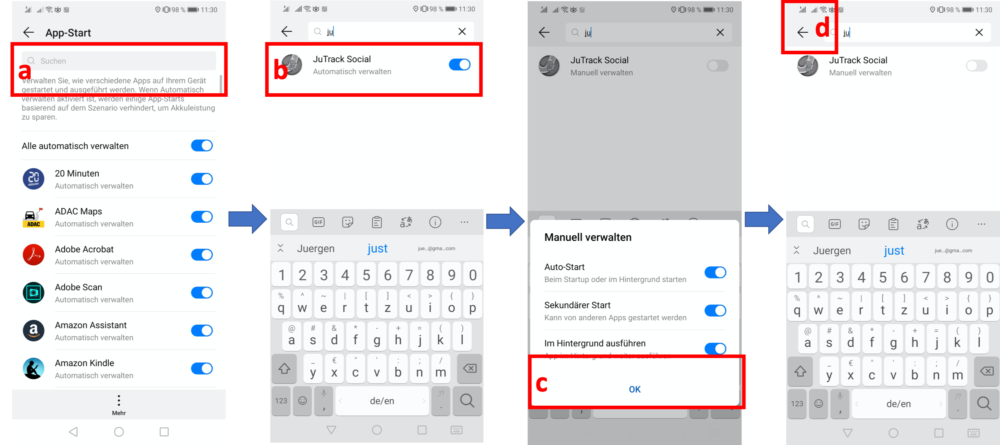
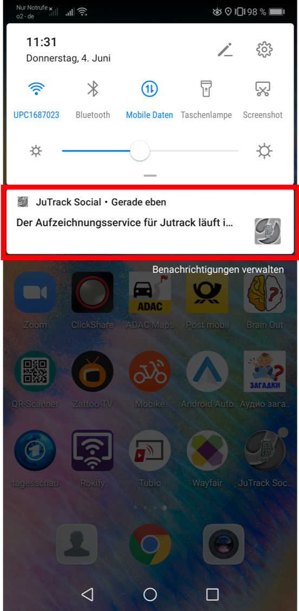

JuTrack Social¶
Requirements¶
- JuTrack relay on Google Play Service .
If your Phone does not support it (e.g. some models of Huawei phones), you may not be able to use all modules.
You need to be in Germany play store, otherwise you may not be able to download the app. To change it visit
How to Install¶
To install the JuTrack Social application please follow the steps bellow:
(a) please check if you are connected to Internet.
(b) go to the Google Play Store, or Or click here to access JuTrack Social in Google Play Store.
(c) in the search bar, look for JuTrack Social
(d) select JuTrack Social
(e) Click on Installing.
{kind=link}
JuTrack Social is downloaded and Installed on you phone, now follow the next steps to activate it:
How to Activate¶
First check your Internet connection, activation and joining a study require an Internet connection.
(a) now, please open the application.
(b) click on the An Einer Studie Teilnehmen (Join a study) to join the study.
(c) accept the camera permission to open a camera. (required to scan a Qr-Code)
(d) scan the provided Qr-Code within 1 minute
{kind=link}
Note
JuTrack Social will ask you to enable the Internet connection if it is not.
Important
provided QR-codes are for One Time usage, (a) Using for a second time or (b) in case of any problem, you will be redirected to Retry page.
{kind=link}
In the next step, please accept the necessary permissions. First, Location Service permission will pop-up, please enable it by selecting ALLOW
{kind=link}
Then, JuTrack Social will take you to the Data Usage Access page in the Android setting to request for permission, which is necessary for Application Usage Statistics module.
(a) Just select JuTrack Social from a list.
(b) and enable it.
(c) to go back, click on back button.
{kind=link}
Almost done!, Now depending on the Android version or Model of your device, JuTrack may request to put it in White List. This step will request your Operation System (Android) or your device battery optimization program to permit JuTrack Social to work on background without of need for optimization. This is a vital step to keep the JuTrack Social running smoothly.
{kind=link}
Note
This step might be different for your device or version of Android.
for Samsung devices with Android 8 or above:
(a) Open unmounted apps:
(b) click to add new application to the list.
(c) Then find Jutrack Social from list.
(d) Then select JuTrack Social and click to enable the check box.
(e) done! now click on ok to finish the process.
{kind=link}
For Huawei device: * (a) in the search-bar, search for JuTrack Social. * (b) click to disable JuTrack Social * (c) accept all by clicking on ok * (d) done! now click on <- to finish the process. |
{kind=link}
for Xiaomi devices :
(a) find JuTrack Social from list, or just search for it form search-bar.
(b) click on to enable JuTrack Social
(c) click on < to finish the process.
{kind=link}
select JuTrack from a list and Enable it.
Congratulation! you finished all the necessary steps to Install and activate the JuTrack Social Application. As you may realized, JuTrack Social will show a notification as long as its running on background!
{kind=link}
{kind=link}
{kind=link}
{kind=link}
{kind=link}
Passive Monitoring:¶
In passive monitoring modules, the assessment will continue without any interaction from users. The following passive monitoring modules will collect data over specified criteria or time period automatically.
Location Service¶
location service records the user’s relative location in a specified time period (i.e. every 10 minutes) or whenever there is a change is the user’s location. for an energy-efficient implementation JuTrack benefits Google’s location service API also, to meet the requirements of security and privacy, the location transformed in 3D space randomly for each user. this transformation is hidden for users and study owners which can not be reverted.
User Activity Detection¶
It detects users mode of transportation, for an efficient implementation JuTrack benefits Google’s activity detection API in this module, JuTrack is able to detect up to 7 different activities every specified time (i.e.every 5 minutes ) or whenever a new activity detected. the list of activities is as follow:
IN_VEHICLE
ON_BICYCLE
ON_FOOT
STILL
UNKNOWN
TILTING
WALKING
RUNNING
Besides detected activities, we also save an accuracy of detected activity in percentage.
Note
we only record the detected activity with accuracy >75%
Application Usage Statistics¶
Application Usage Statistics keeps track of applications used by the user. It captures and records the amount of time each application was in the foreground since the Previous Midnight. Among different applications such as social media, texting, games and etc, it also tracks the time spent on phone calls or Short Message Service (SMS) text messaging. it records these statistics every specified time period (i.e. every 1 hour).
Important
this module does not have access or track any personal information such as the content of the application or phone number.
Sensors¶
supported sensors:
Accelerometer
Gyroscope
Barometer
Magnetometer
Gravity
Light
Linear Accelerometer
Rotation
Proximity
Active Monitoring¶
will soon be released
Ecological Momentary Assessment¶
will soon be released